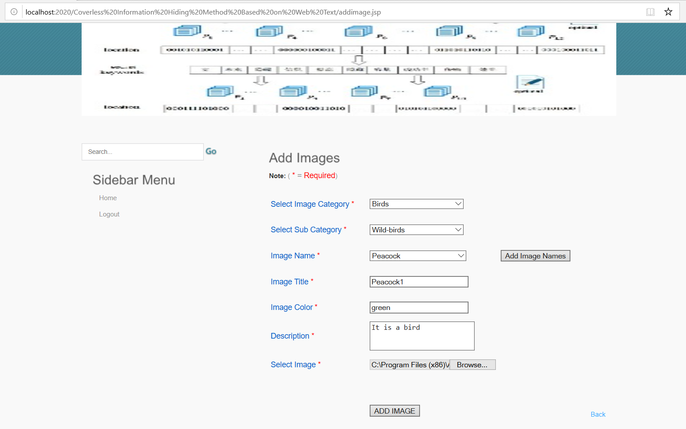

Name: Multi Language Block Ciphering Using Two Dimensional Substitutional Array
Duration: 4 Weeks
Technology Used: Java
Brief Description:
In order to send information securely and to protect the same from the understanding of other,
people around the world are using the variouscryptographymethod of writing information.
But for getting the Cipher by adopting the Multilanguage Encryption Technique (MULET), one has to apply two types of Replacement called ‘Character’ and ‘Numerical’.
The resultant Cipher is a stream cipher.
_ _ _ _ _ _ _ _ _ _ _ _ _ _ _ _ _ _ _ _ _ _ _ _ _ _ _ _ _ _ _ _ _ _ _ _ _ _ _ _ _ _ _ _ _ _ _ _ _ _ _ _ _ _ _ _ _ _ _ _ _ _ _ _ _ _ _ _ _ _ _ _ _ _ _ _ _ _ _ _ _ _ _ _ _ _ _ _ _ _ _ _ _ _ _ _ _ _ _
Name: Coverless Information Hidding Method Based On Web Text
Duration: 2 weeks
Technology Used: Java
Brief Description:
Coverless information hiding has become a hot topic because it can hide secret information into carriers without any modification.
Aiming at the problems of the low hiding capacity and mismatch in text big data, a novel method ofcoverless information hiding by retrieving the massive amount of web text on the Internet.
First, the proposed method uses a web spider technology to capture web texts associated with SIto construct a web-text library.
Second, some texts containing SI are searched and the optimal web text is selected from them. Then, the location of the SI in the selected web text is described by using a 2-D coordinate system.
Finally, the URL of the web text is combined with the obtained location information and then sent to the recipient. The experimental results and analysis show that the performances are improved in terms of HC, hiding success rate, and security..
_ _ _ _ _ _ _ _ _ _ _ _ _ _ _ _ _ _ _ _ _ _ _ _ _ _ _ _ _ _ _ _ _ _ _ _ _ _ _ _ _ _ _ _ _ _ _ _ _ _ _ _ _ _ _ _ _ _ _ _ _ _ _ _ _ _ _ _ _ _ _ _ _ _ _ _ _ _ _ _ _ _ _ _ _ _ _ _ _ _ _ _ _ _ _ _ _ _ _